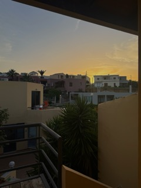
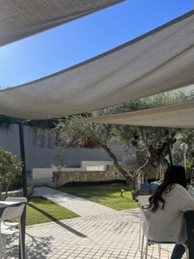
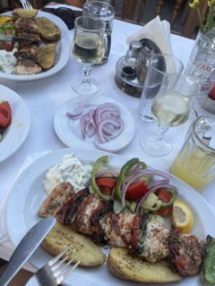

Kiinnostaako Kreikka?
Kreikka tarjoaa ainutlaatuisen yhdistelmän rentoa elämäntyyliä, erittäin laajaa historiaa, lämminhenkistä kulttuuria ja kauniita maisemia. Tällä sivustolla esittelen arjen todelliset piirteitä: asumisen, työnteon, kulttuurin ja käytännön asiat.
Usein maan aurinkoinen ilmasto ja yhteisöllisyys kutsuvat ihmisiä tutustumaan maahan, ja jopa harkitsemaan muuttoa. Oma innostukseni Kreikkaan lähdöstä alkoi vitsinä kavereiden kesken kesällä 2022. Olen lapsuuteni aikana matkustanut useammassa Kreikan kohteessa, mutta ensimmäisen lomamatkan Kreetan saarelle toteutin täytettyäni 18 vuotta. Loman aikana pääsin tutustumaan aiemmin tutuksi tulleiden maan perinteiden lisäksi paikallisiin ihmisiin ja tapoihin. Sanoisin jopa sosiaalisten kohtaamisten olleen suurin syy päätökselleni muuttaa maaahan. Kokemuksena Kreikassa asuminen oli silmiä avaava ja henkisesti rikastuttava. Tästä syystä haluan jakaa kokemuksiani ja vinkkejä muille, jotka voivat olla kiinnostuneita Kreikasta.


